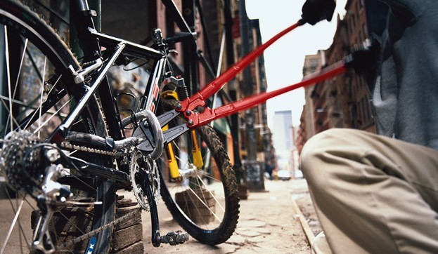

Riesgos
Sumado a esto, están las denuncias ciudadanas de ciclistas sobre los robos que viven a diario en ciclorutas, bicicarriles, e incluso en las diferentes vías y avenidas, donde los ladrones han reinventado sus métodos para despojarlos de sus pertenencias, incluso atacando directamente la vida e integridad al oponer resistencia.
A pesar de que Bogotá es conocida como una de las ciudades más amigables con los ciclistas por la gran red de rutas para uso de bicicletas, desde la Alcaldía y la Secretaría de Seguridad se hacen los de la vista gorda ante la problemática en seguridad que se vive día a día, tanto para los ciclistas como para los bogotanos en general.